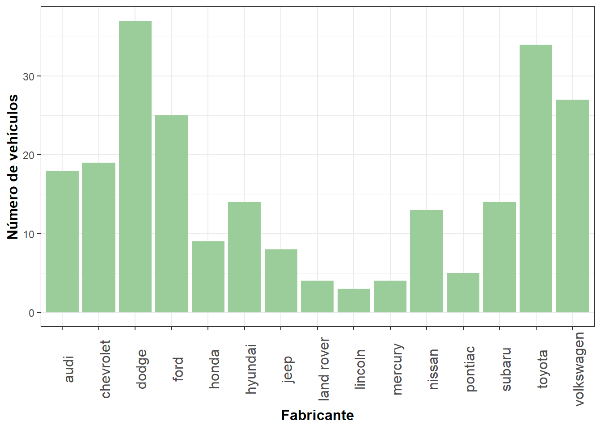
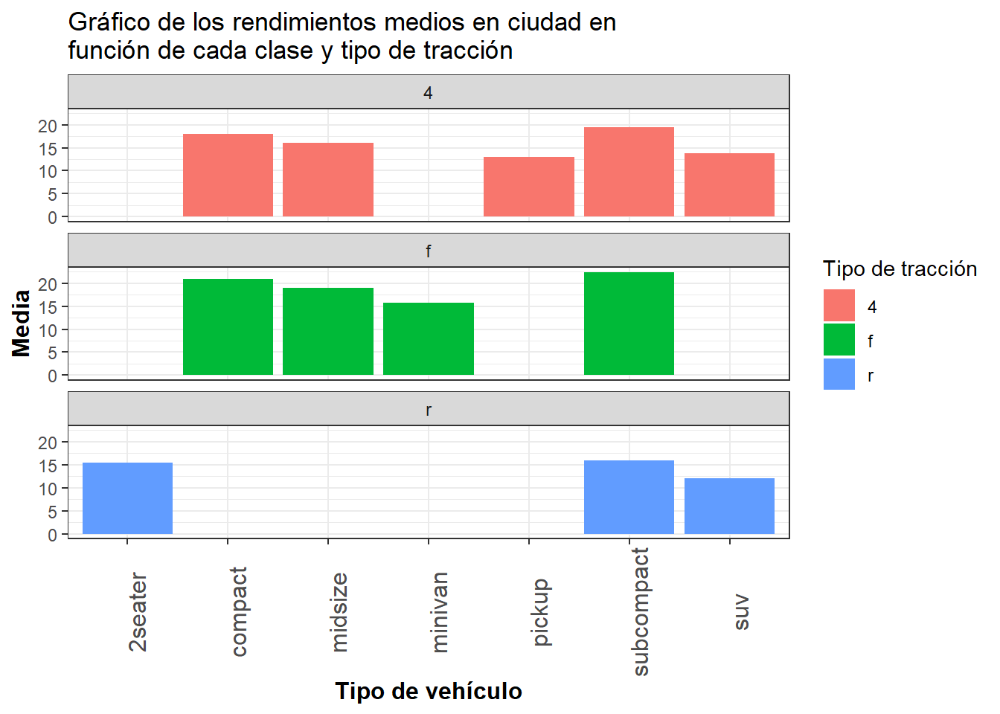
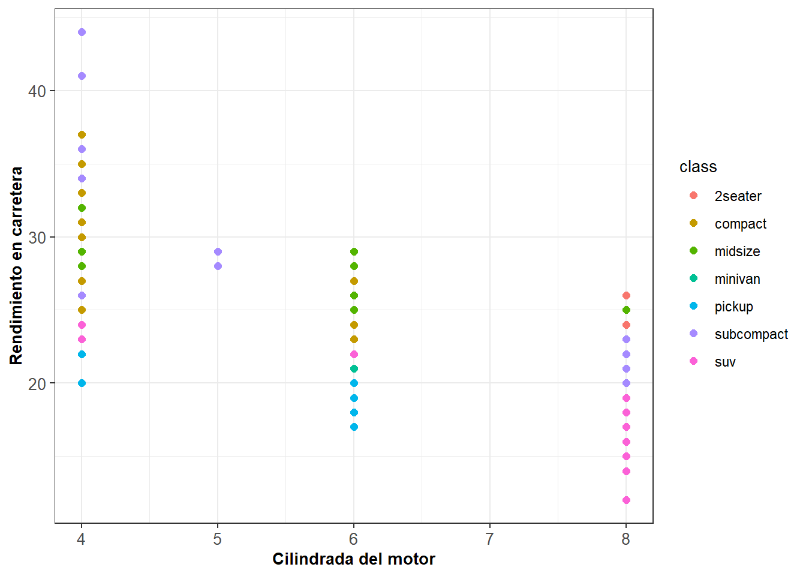

# A tibble: 6 × 11
manufacturer model displ year cyl trans drv cty hwy fl class
<chr> <chr> <dbl> <int> <int> <chr> <chr> <int> <int> <chr> <chr>
1 audi a4 1.8 1999 4 auto(l5) f 18 29 p compa…
2 audi a4 1.8 1999 4 manual(m5) f 21 29 p compa…
3 audi a4 2 2008 4 manual(m6) f 20 31 p compa…
4 audi a4 2 2008 4 auto(av) f 21 30 p compa…
5 audi a4 2.8 1999 6 auto(l5) f 16 26 p compa…
6 audi a4 2.8 1999 6 manual(m5) f 18 26 p compa…
Problema 1
Dibujad un gráfico que permita visualizar el número de vehículos de cada fabricante del conjunto de datos.
datos %>%ggplot(aes(x=manufacturer))+geom_bar(fill ="darkseagreen3")+labs(x="Fabricante", y ="Número de vehículos")+theme_bw()+theme(axis.text.x =element_text(angle=90,size=12),axis.title =element_text(size=12, face ="bold"))

Problema 2
Dibujad un gráfico para mostrar el rendimiento medio en ciudad para cada clase.
ggplot(data = datos, aes(x = class, y = cty)) +geom_boxplot(aes(color = class), width =0.3, show.legend =FALSE)+geom_jitter(aes(color = class), alpha =0.5, show.legend =FALSE, position =position_jitter(width =0.2, seed =0))+theme_bw()+scale_color_manual(values =c("hotpink","goldenrod1","lightgreen","turquoise","deepskyblue1" ,"purple","salmon")) +labs(x ="Tipo de vehículo", y ="Rendimiento en ciudad")+theme(axis.text.x =element_text(size=12),axis.title =element_text(size=12, face ="bold"))+geom_point(stat ="summary", fun ="mean", shape =16, size =1.5, color ="black")
Problema 3
Construid un gráfico para mostrar el rendimiento medio en ciudad para cada clase y tipo de tracción simultáneamente.
datos %>%ggplot(aes(x = class, y = cty, fill = drv)) +geom_bar(stat ="summary", fun ="mean", position ="stack") +labs(title ="Gráfico de los rendimientos medios en ciudad en\nfunción de cada clase y tipo de tracción",x ="Tipo de vehículo",y ="Media") +guides(fill =guide_legend(title ="Tipo de tracción"))+facet_wrap(~ drv, ncol =1)+theme_bw()+theme(axis.text.x =element_text(angle=90,size=12),axis.title =element_text(size=12, face ="bold"))

Problema 4
Utilizad un gráfico para mostrar la relación entre el tamaño del motor y el rendimiento en carretera, para cada clase de vehículo. ¿Qué podéis observar?
ggplot(datos) +geom_point(mapping =aes(x = cyl,y = hwy,color = class), size=2)+theme_bw() +theme(axis.text =element_text(size=10),axis.title =element_text(size=10, face ="bold"),legend.title =element_text(size=10)) +labs(x="Cilindrada del motor", y="Rendimiento en carretera")+guides(fill =guide_legend(title ="Clase de vehículo"))

Observamos que, al ser la variable cyl del tipo int, hay muchas observaciones con el mismo valor.
Notemos que a simple vista, cuanto menos cilindradas tenga el vehículo, más rendimiento tiene. Eso se debe a que el consumo de el combustile es directamente proporcional al número de cilindros que posee. Por tanto, con la misma cantidad de combustible, el vehículo que tenga menor cilindrada recorrerá mayor distancia y su rendimiento será más alto.
Problema 5
Comparad la distribución del rendimiento en ciudad para distintos tipos de tracción.
datos %>%ggplot(aes(x = cty)) +geom_density(aes(fill = drv), alpha =0.5, position ="identity",na.rm =TRUE,color =NA) +scale_fill_manual(values =c("#089392","#CF597E","#EAE29C")) +labs(x ="Rendimiento en ciudad",y ="Densidad") +guides(fill =guide_legend(title ="Tipo de tracción")) +theme_bw() +theme(axis.text =element_text(size=10),axis.title =element_text(size=10, face ="bold"),legend.title =element_text(size=10))